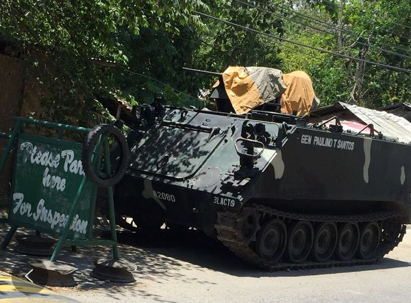
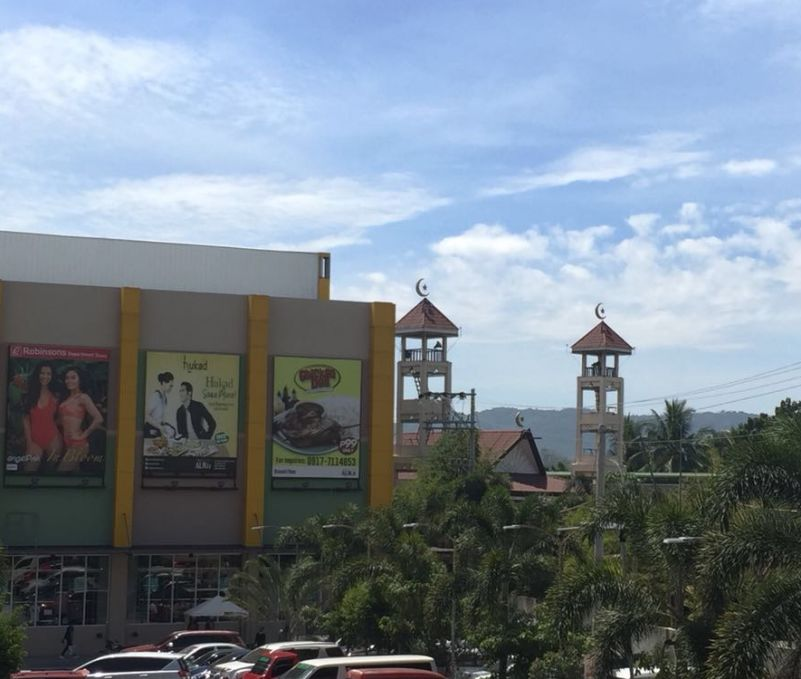
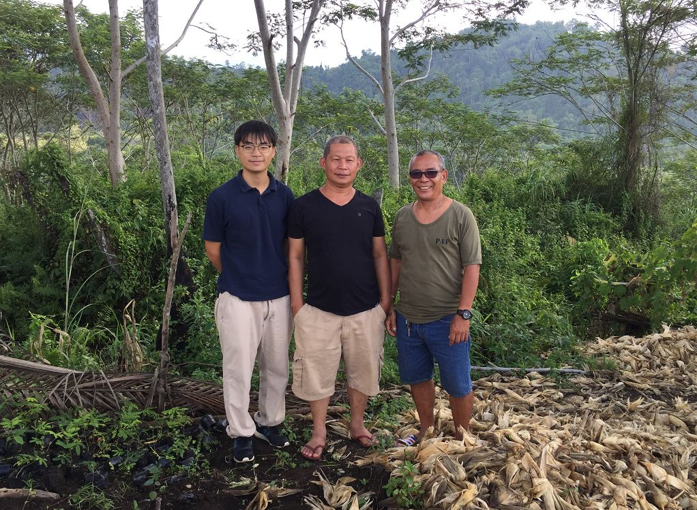
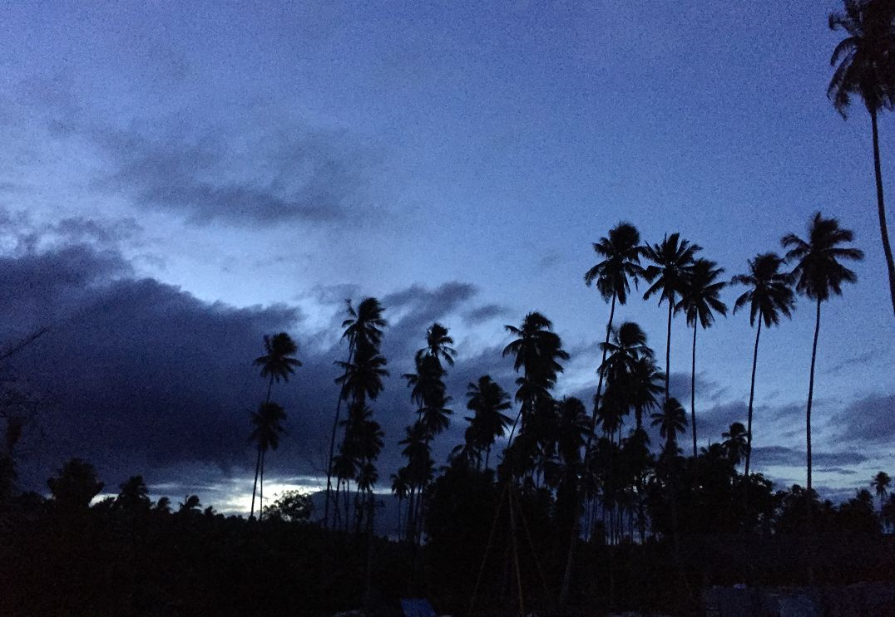

收录于合集
作者简介： 笔名高行云，公众号Sociological理论大缸创办人，台湾中山大学哲学所硕士生，正在菲律宾做博士论文田野工作，努力搭上“一带一路”假装在发财。
一、枪声
晚上十点，住在隔壁的菲律宾秘书突然和我说：
Don’t open the door.
正当我坐在工厂生活区大厅里，没反应过来是我的卧室的door，还是没装door的生活区大门，秘书又继续说：
Don’t go out stay at the container. I cannot go there. Soldiers are already patrolling.
我回复了个ok，已经看到保安到了大门口，便回复：
The security is here. I stay in the container.
我真要stay 吗？那个人真是保安吗？我要在这紧急时候，直接躺回卧室，也不出去看一下、问一下究竟发生什么了吗？
还是得搞明白。我出去见到这位五十多岁、有些急喘的执枪保安，他第一句话便说：
Are maam and sir there?
我说老板和他夫人要下周才回来的时候，听到一声“啪”的一声。
枪声吧？！
接着用彼此都粗糙简单的英语问下发生什么了—500 miles, gun, family, Muslim。我为什么没有直接问RIDO——菲律宾当地家族之间仇杀的一种传统？是因为担心真的是RIDO所以才从family确认到Muslim？
不过，我不过我还是请他确认，枪声是否真的只有500米远——同时，脑海里闪过一个画面：是一颗流弹穿中我胸膛。我突然感觉到站露天的位置，是多么不安全，便回到卧室内。

图1 这是在大街上的坦克上晒被子吗？
二、RIDO
这不是当地第一桩枪击案了。
我所在的工厂、或者工厂所在的庄园的对面，是当地部队的军营总部。自2017年“阿布沙耶夫”等恐怖组织集合攻占当地穆斯林中心城市Marawi之后，总统杜特尔特对棉兰老岛实行军事戒严。自此，公路干道每隔几公里便树起真枪实弹的军哨，每几十公里便有个军营。
为什么军营总部在这个庄园对面？
今年一月份，镇上举行天主教的节日活动，作为豪华（音译，作为假名）家族的继承人，除了邀请家族各支代表头人参加，还请了菲律宾部队的一位大校参宴。可想而知， 军营维持当治安，需要地方家族的支持；地方家族想安全长久，也需要依赖军队的协助。
但是， 看似共生的关系，背后又有各自的执着。
在夜晚枪声的一月前，我在路边遇到对面军营的上尉。这位军官突然和我说起我所在的豪华家族，最近发生了一起RIDO。
豪华家族的一名成员在Lanao湖附近的时候，被同属ARMM（棉兰老穆斯林自治区）的另一家族——龙布斯（音译）的成员枪杀。RIDO 的原因简单： 十几年前，他的哥哥被豪华家族的此人杀害。
一仇复十年，一命还一命。所以， 当会英语的本地人向外来人解释什么叫RIDO的时候，往往用两个叠词：family-family, blood- blood。不过，或者还要再加上一条：business-business。
军官也说起自己的无奈，虽然自己想介入协调，但他们并不听自己的劝。毕竟，此案虽是十年一起，但是在军营一边的路边，多个穆斯林家族之间也习于RIDO。
RIDO并不单纯——尽管根据豪华家族的解释，这是由尊严与耻辱而起。撇开菲律宾特色的政治寡头制度而起精英家族传统不谈，地方上也已有了RIDO的不同“玩法”。
一方面，由于菲律宾的暴力机器并没有被国家垄断——国家只控制部队，但省长有自己的警察，村长有自己的保安队，大家都是民选出来的。为此，要避开国家部队的管制，就要带着自己的人马离开公路干道，到山里决斗。另一方面，国家为了恢复地方秩序，也不得不在事起之后花钱安抚双方利益，以致于rido双方将之视为business。军营对面这个豪华家族的继承人这样解释所谓的business：
It’s only applicable with Muslims specifically maranao.usually during their exchange fire,the soldiers already cordoned the area to prevent the involved people to escape further.the following day,families involved in this activity will report to the government to explain their side and who started it..and then each family sets some certain amount for the damages for each property and wants to collect money. A negotiator then comes in to speak for both sides with the help of the local governments.Usually it starts from 300 thousand down to what ever amount is fix. Rido is becoming a business.Sometimes both parties are into this for both parties to earn.
The one who provides money is the local government,mayors then barangay captains..and some of the business men within the areas..they ask for money plus live stocks like cow,goats some horses..the soldiers usually doesn’t want to tolerate this kinds of practices becoz it keeps on happening again and again and at the end of the day this families and laughing and celebrating.even if sometimes there are casualties they are happy becoz the amount set will be higher than 300 thousand..
图2 枪杆子里出田野
三、宗教
上尉还和我解释，RIDO复仇的规则还包括一条： 如果我的家族被你的家族杀了一人，我可以追杀你至第四代为止，此后不再计较。但是，豪华家族混杂且庞大，势力遍布Davao，Gensan City, Cotabato, Malabang甚至三宝颜（Zamboanga），兴盛的分支甚至是创立新省份的省长，即使衰落的分支也依然和矿山、加油站这些和政府审批、关键资源领域。所以，在其它家族看来，只要你姓“豪华”，不论第几代，均杀之。
但是上尉却又加上一条：这支涉仇的是豪华家族中已经穆斯林的一支。确实，作为当前继承人的Mr.L等人，早已经在十几年前的仇杀开始时，逃离了庄园，搬到天主教城市居住。相较穆斯林内部的家族仇杀，如何避免卷入穆斯林的仇意，也是作为围观者的天主教徒必须要学会的智慧。
或许是出于社会学的直觉，到这种地方当然想问当地宗教冲突怎么样。作为天主教徒的庄园经理Rd和我说：大家相互通婚，多么peaceful。我想这是真的，因为这不过是个小城小镇。
但是，当我和Rd要去小城M观看一家净水站的设备时，Rd却不让我下车，甚至自己也不亲身去问，反而是托他的朋友去拍照了解。Rd另推荐我去了小镇B，说那儿有家便宜的店，20p/L，比这里便宜了一半。我们如愿参观了这家天主教徒在小镇的净水站。
为什么不到半小时车程，却差价一半呢？为什么便宜甚多的水商，却没有进军更大市场，反而呆在无名小镇呢？毕竟，这个地方打不出井水、更无自来水，只能从泉水灌装、净化和售卖。
Rd甚至说过，在另一个天主教城市，有一家净水站便是从带旁坐的摩托车送水开始，发展到现在有十多辆摩托车和大卡车。 Rd并不隐瞒他的担心，在这个穆斯林地区，他和我们一旦直接让那家穆斯林净水站知道潜在竞争对手来此参观，便是种下杀身之祸，还“要啥自行车”。

图3 清真寺新月与大卖场的“比基尼”广告同框
四、农民
在那起夜半枪声里、在这个庄园故事里，似乎主角都被台面上的宗教与国家、家族与军队所垄断了。然而，这个庄园的沉默的大多数，却是农民。
那位气喘而来的执枪保安，是庄园的“家生子”——世代居于此、长于此、逝于此的农民。区分农民和庄园主的方式很简单：
不是租佃的契约：地主连地租都不收；而是作物的契约：农民只种玉米和木薯，庄园主种椰树和蕉麻。如果农民的儿子（女人无租地权）成家，可以向地主申领一公顷的土地，庄园主也一般不会拒绝。毕竟，从作物的分布上来讲，玉米、木薯以及椰树，很容易以间种的方式共生。
所以， 庄园枪声似乎从一开始就没被理解成阶级的故事。正如庄园主Rd解释：正因我们不收租，所以我们在这里才安全，不用像隔壁的那个庄园有那么多带枪保安来保护自己。
Rd只讲自己与农民相互仁慈的一面，却没讲自己与农民的虚弱的一面。自从十几年前的地方Rido以及地方长期叛乱之后，地主出走城市，庄园已是无人经营。如今在军事戒严的保护下重返和经营庄园，要如何安身立命呢？
对种植的规范、地租的宽容，是因为农民已是朝不保夕。一位农民这样解释自己一年的经济。
一袋25kg大米是1200比索，可供4人家庭吃15天。全年都吃这个主食要近3万块比索，4200人民币。他有一公顷的地方，可种木薯，卖给附近的美国公司。木薯一年一收，得3000-4000kg，收购价是2p/kg，一年收入是8000比索。不够吃。
地主还能再伸手吗？ 相互的仁慈来自于共同的虚弱，使彼此摆脱来自枪声的对立。

图4 你看到的那山那树那土地，
全都是中间这位地主/村长的
五、谣言
回到那晚的枪声，真的是穆斯林家族之间仇杀再起的RIDO吗？
我在事发当下，报告给工厂老板，老板又即刻转告豪华家族继承人。结果，继承人却给出这样一番解释：
It’s our security from the coconut.He gave a warning shot becoz they think some people are stealing coconuts.but it was already reported to the commander.
Don’t worry our staff is very safe becoz our security are all active at the moment.the soldiers will be going around the hacienda.
这则解释能相信吗？庄园长年失于管理，椰子早已任由采摘，何偷之有？再言之，一个成熟椰子不过能卖4.05p，一个人最多能抱几个椰子走呢？
这也不是家族继承人第一次说don’t worry了。上次发生这样事情的时候，他给出这样的教父式教诲：
Hearsay and gossip is one business. If you believe in the people who spread false information it’s one thing to manipulate people or control people also.thats why I always tell our people not to make gossip and bad jokes becoz at the end of the day when there is a final investigation,this thing will bounce back to the people who creates this things and could cost them their jobs.

图5 夜晚结束前的棉兰老岛一角
审读：杨端程
编辑：吴温泉


政文观止
微信扫一扫赞赏作者 __赞赏
已喜欢，对作者说句悄悄话
取消 __
发送给作者
发送
最多40字，当前共字
上一页 1/3 下一页
长按二维码向我转账
受苹果公司新规定影响，微信 iOS 版的赞赏功能被关闭，可通过二维码转账支持公众号。